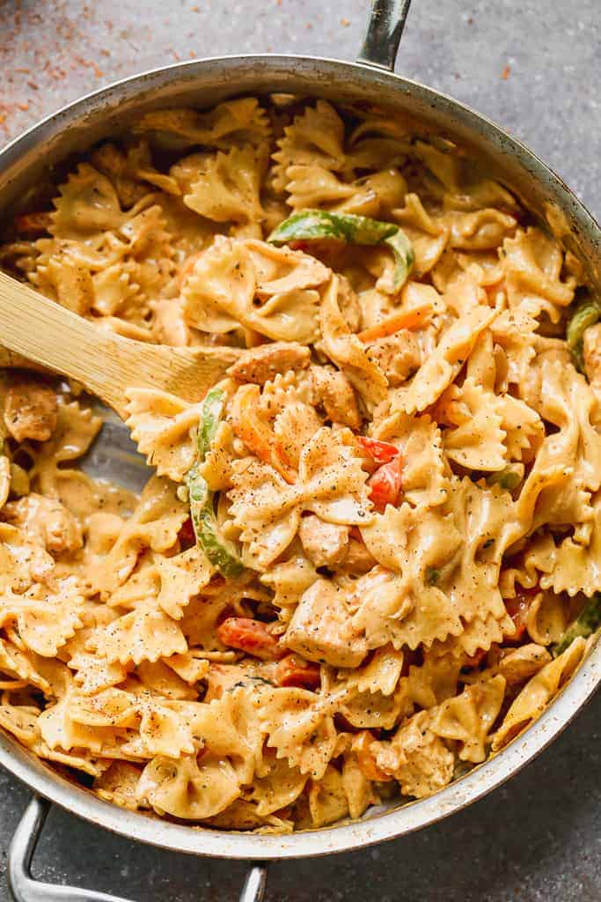

Cajun Chicken Pasta

About the recipe
If you're looking for a creamy, delicious pasta dish with some real KICK to it; this is the one for you!
It only takes around 30 minutes to make and there are TONS of ways to make it healthy.
Ingredients
- 8 oz. farfalle pasta
- 2 Tbsp butter
- 3 cloves minced garlic
- 1 lb. bonless skinless chicken breast
- 2 tsp Cajun Seasoning
- 4 oz cream cheese
- 1 cup milk
- 3/4 cup parmesan Cheese
- 1/2 tsp black pepper
- 1/2 tsp salt
- Fresh veggies if desired
Instructions
- Cook pasta according to the instructions on the package.
- In a large pot or skillet, melt the butter over meadium heat. Add the garlic and cook for 30 seconds.
- Add chicken (and any desired veggies) and season with cajun seasoning. Coock for 3-4 minutes, until chicken is nearly coocked through.
- Add the milk and cream cheese, stirring well until cream cheese has melted and sauch is smooth.
- Stir in pasta, parmesan cheese, salt and peppers.